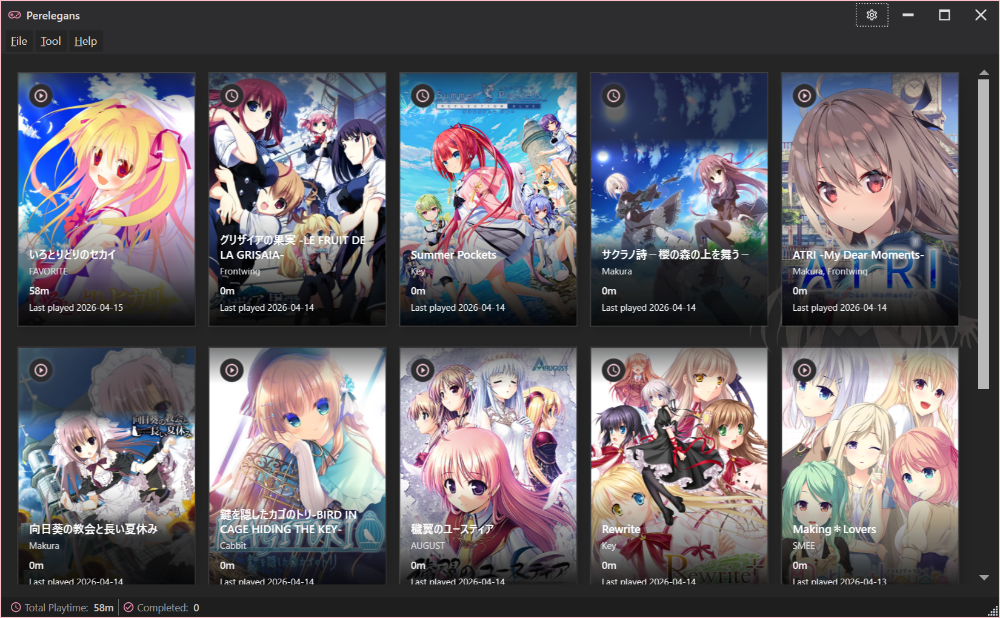

Windows 桌面应用
.NET 8 / WPF
MIT License
中 · EN · 日
✨ 新增 AI 助手 & Bangumi OAuth
Perelegans
用于追踪视觉小说的游玩时间的 Windows 桌面应用。

主界面 · 游戏库 / 游玩时长 / 自动追踪
演示视频
快速浏览 Perelegans 的核心体验：游戏库管理、游玩时长追踪与 AI 助手。
功能特性
🎮
游玩时间追踪
- 基于进程监控自动记录游玩时长，无需手动操作
- 可自定义监控轮询间隔
- 实时检测游戏运行状态并显示指示器
- 完整的游玩会话历史记录
📚
游戏库管理
- 从运行中的进程快速添加游戏
- 状态标记：在玩 / 已弃 / 已通关 / 计划中
- 数据库备份与还原
🖼️
封面管理
- 从元数据源搜索并选择高质量封面图
- 支持本地缓存封面，离线可用
🤖
AI 游戏推荐
- 基于游戏库与玩家口味画像，结合 VNDB 数据智能推荐
- 接入 OpenAI 兼容 API，生成个性化推荐理由
- 可自定义 API 地址、密钥与模型
💬
AI 自然语言助手 NEW
- 对话式查询：「上个月玩了哪些游戏」「推荐类似 XX 的作品」
- 基于游戏库与游玩数据上下文生成答复
- 支持多轮对话与上下文记忆
- 复用 AI 推荐的 OpenAI 兼容 API 配置
📊
游玩统计
- 可视化游玩时间分布
- 游玩时段趋势分析
🎨
个性化
- 亮色 / 暗色 / 跟随系统三种主题
- MahApps.Metro 现代化 UI 风格
- 三种语言：简体中文 · English · 日本語
🔧
实用功能
- 系统托盘最小化，后台静默监控
- 开机自启动
- HTTP 代理设置
- 单实例运行保护
安装
从 Release 下载（推荐）
前往 Releases 页面下载最新版本的压缩包。
从源码构建
前置要求：.NET 8 SDK
# 克隆仓库
git clone https://github.com/Shizuku-in/Perelegans.git
cd Perelegans
# 构建
dotnet build src/Perelegans/Perelegans.csproj
# 运行
dotnet run --project src/Perelegans/Perelegans.csproj快速上手
-
启动应用
运行
Perelegans.exe - 添加游戏 启动游戏后，在应用中点击「从进程添加」选择对应的进程。
- 补全信息 右键游戏卡片 → 「获取元数据」自动从 VNDB / Bangumi / 批评空间抓取。
- 自动追踪 保持应用在后台运行，自动监控进程并累计游玩时间。
- 查看统计 主界面查看总时长，或打开统计面板查看详细数据。
API 接入配置
Perelegans 的元数据抓取与 AI 功能均依赖外部 API。下面着重介绍 Bangumi 授权 与 OpenAI 兼容 API 的配置方式。
📘 Bangumi API 授权
Bangumi 部分接口（收藏同步、个人数据读写等）需要授权。Perelegans 支持 两种方式，任选其一即可。
方式一 · 推荐
🔑 直接生成 Access Token
适合个人单机使用 · 几分钟即可完成
- 登录 Bangumi 账号
- 打开 next.bgm.tv/demo/access-token
- 点击「创建个人令牌」，填写名称（如
Perelegans）与有效期 - 复制生成的 Access Token
- 在 Perelegans：
设置→元数据源→Bangumi→ 粘贴 Token → 保存
⚠️
Token 请妥善保管，勿提交到公开仓库。过期后需重新生成。
方式二 · 高级
🔐 创建 OAuth 应用
支持自动刷新 Token · 适合长期使用或多账号场景
- 登录后访问 bgm.tv/dev/app
- 点击「创建新应用」并填写：
- 应用名称
- Perelegans
- 应用描述
- 用途说明（可选）
- 主页 URL
- 例如 GitHub 仓库地址
- 回调地址
- http://localhost:32157/callback
- 创建后获得 App ID 与 App Secret
- 在 Perelegans：
设置→Bangumi→ 选择「OAuth 登录」 - 填入 App ID / App Secret → 点击「授权」
- 浏览器跳转 Bangumi 授权页 → 同意 → 完成登录
✨
Perelegans 将自动管理 Access Token 与 Refresh Token 的刷新，无需手动续期。
📊 两种方式对比
| 特性 | 个人 Token | OAuth 应用 |
|---|---|---|
| 配置难度 | ⭐ 简单 | ⭐⭐ 中等 |
| 自动刷新 | ❌ 需手动重新生成 | ✅ 自动刷新 |
| 有效期 | 自定义（通常 ≤ 1 年） | 长期（自动续期） |
| 适用场景 | 个人单机使用 | 长期 / 多账号 |
🤖 OpenAI 兼容 API（AI 推荐 / AI 助手）
AI 游戏推荐与 AI 自然语言助手共享同一套配置，支持 OpenAI、DeepSeek、OpenRouter、本地 Ollama 等所有兼容服务。
- 在 Perelegans：
设置→AI面板 - 填写以下三项：
- API Base URL
- https://api.openai.com/v1
- API Key
- sk-xxxxxxxxxxxxxxxx
- 模型名称
- gpt-4o-mini / deepseek-chat / qwen2.5:7b
- 点击「测试连接」验证
- 保存后即可在「推荐」与「AI 助手」面板使用
💡
如需走代理，请在
设置 → 网络 中配置 HTTP 代理。
技术栈
| 类别 | 技术 |
|---|---|
| 框架 | .NET 8 / WPF |
| UI 库 | MahApps.Metro |
| MVVM | CommunityToolkit.Mvvm |
| 数据库 | EF Core + SQLite |
| 图表 | LiveCharts2 |
| 网页解析 | HtmlAgilityPack |
| CI/CD | GitHub Actions |
项目结构
src/Perelegans/
├── App.xaml(.cs) # 应用入口，服务初始化，单实例 & 托盘管理
├── Models/ # 数据模型（Game, PlaySession, AppSettings 等）
├── Data/ # EF Core DbContext
├── Services/ # 业务逻辑层
│ ├── DatabaseService # 数据库 CRUD
│ ├── ProcessMonitorService # 进程监控 & 游玩时间记录
│ ├── VndbService # VNDB API 客户端
│ ├── BangumiService # Bangumi API 客户端
│ ├── ErogameSpaceService # ErogameSpace 爬虫
│ ├── RecommendationService # 游戏推荐引擎
│ ├── AiRecommendationService # AI 推荐理由生成
│ ├── AiAssistantService # AI 自然语言助手
│ ├── BangumiOAuthService # Bangumi OAuth 授权流程
│ ├── CoverArtService # 封面图获取 & 缓存
│ ├── ThemeService # 主题切换
│ ├── TranslationService # 多语言翻译
│ ├── SettingsService # 设置读写
│ └── StartupRegistrationService # 开机自启注册
├── ViewModels/ # MVVM ViewModel 层
├── Views/ # XAML 界面
├── Controls/ # 自定义控件（MasonryPanel 瀑布流布局）
├── Converters/ # 值转换器
├── Themes/ # 自定义主题资源字典
└── i18n/ # 国际化资源文件（.resx）
许可证
本项目基于 MIT 许可证 开源。 欢迎 Issue / PR / Star ★。